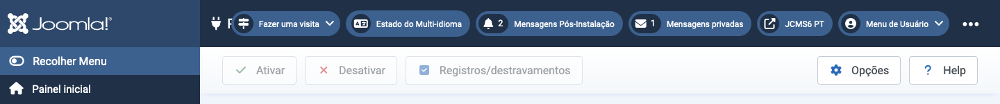

Finalidade¶
Barras de ferramentas estão presentes em quase todas as páginas do Administrador do Joomla! As exceções notáveis são os painéis de controle. Elas estão localizadas no topo da página, logo abaixo da barra de título que contém o nome da página e vários módulos de status, como a versão do Joomla e o link para a página inicial.
Cada página tem um conjunto de botões adequados à sua finalidade. Alguns são comuns, como Salvar, Cancelar e Ajuda. Outros são raros, como Reconstruir e Excluir Órfãos. Alguns estão sempre ativos. Outros estão inativos (cinza) até que uma caixa de seleção de item da lista seja selecionada.
Se houver muitos botões, eles irão se ajeitar em duas linhas. Alguns exemplos:
Barra de Ferramentas de Edição de Artigo¶

Os botões sem um ícone de seta para baixo operam imediatamente. Assim, Salvar salvará a página e retornará com uma mensagem de confirmação verde ou uma mensagem de erro vermelha. Observe que, na maioria dos casos, o botão Cancelar fechará uma página de edição sem salvar nenhuma alteração.
Os botões com um ícone de seta para baixo têm duas funções. Selecione o ícone e uma lista aparecerá, como mostrado na captura de tela acima. Isso permite a seleção de ações alternativas. Selecione o botão e essa ação será realizada. Assim, Salvar e Fechar no exemplo da captura de tela.
Alguns botões só aparecem em determinadas circunstâncias. Por exemplo, o botão Verificação de Acessibilidade só aparece se o plugin Sistema - Verificador de Acessibilidade do Joomla estiver ativado. E Associações só aparece em sites multilíngues.
Explore o que os vários botões fazem!
Barra de Ferramentas da Lista de Plugins¶

Neste exemplo de Barra de Ferramentas, os botões estão em cinza para indicar que estão inativos. Eles se tornam brilhantes e ativos quando uma caixa de seleção de item do Plugin é marcada para que esteja pronta para Habilitar, Desabilitar ou Fazer check-in. Vários itens da lista podem ser selecionados para ação simultânea, que é o principal objetivo desses botões da Barra de Ferramentas. Itens individuais podem ser processados com os ícones em cada linha (não mostrado).
Traduzido por openai.com